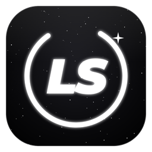

Setup Hub
Setup guides, error code fixes and tools, all in one app.
It updates itself, so you only install it once.
How to install
- Click Download for Windows and open the file when it finishes.
- If Windows says “Windows protected your PC”, click More info, then Run anyway.
- Setup Hub installs and opens by itself. Sign in with Discord and you’re in.
Already have it? You don’t need to download it again. Setup Hub updates itself and will show Restart to update when a new version is ready.